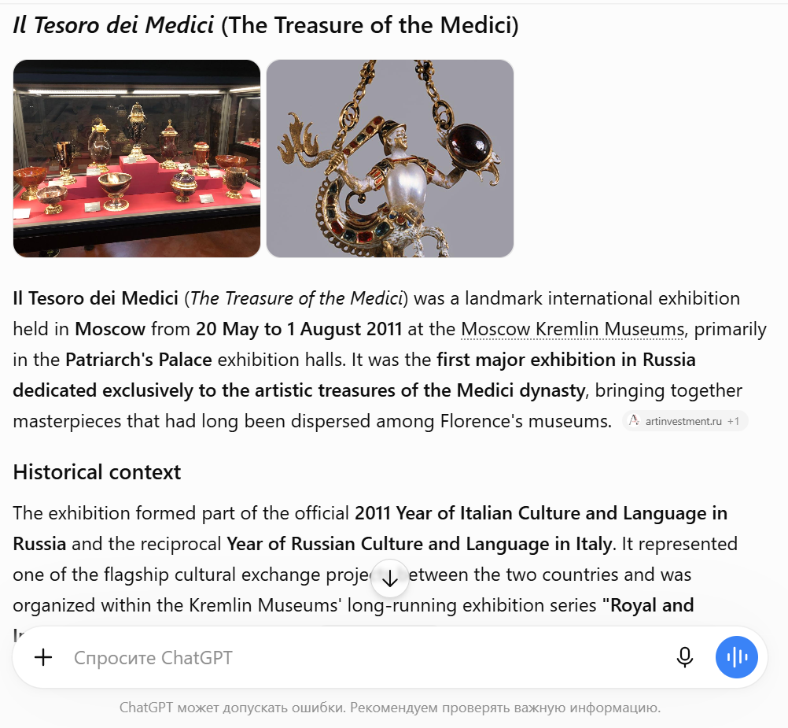
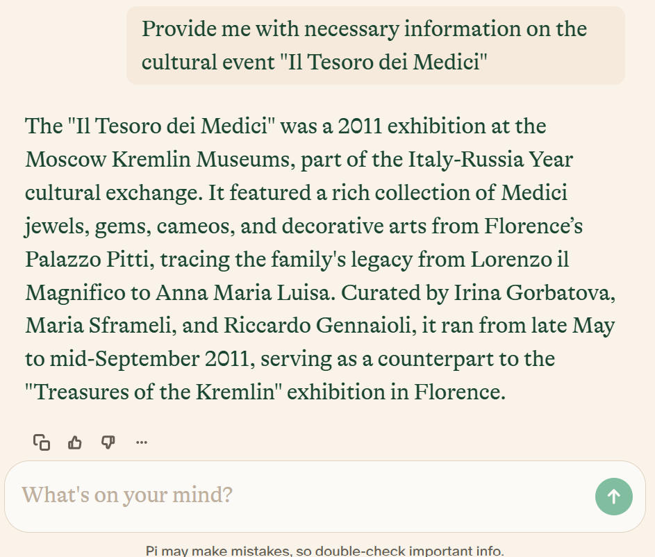
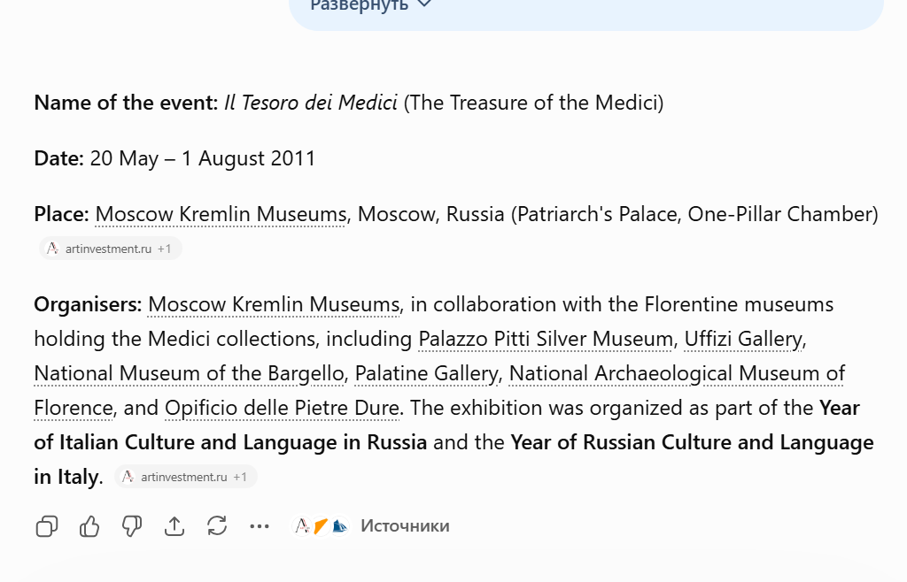
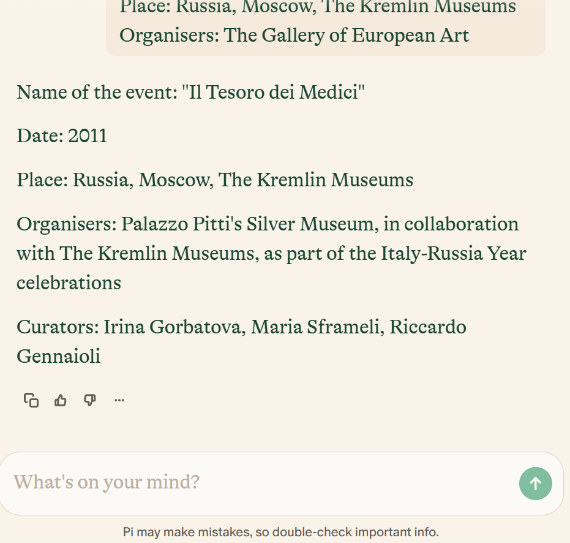

Daria
1. The main focus
After querying ArCo on different topics related both to Italy and Russia, it has occurred to me that researching cultural events will be the most illustrative and interesting process – not only ArCo has got a vast amount of information on them, but also misses some important pieces of it.
Thus, the topic is chosen – cultural events combining Russian and Italian cultural heritage.
2. SPARQL Queries & Results
The following queries were used to explore the ArCo knowledge graph and retrieve information about cultural events in Russia.
Query 1: Events in Moscow
Description: Since we decided to work on events combining Russian and Italian cultural heritage, the initial first step is choosing an event. The main cities to consider in Russia are Moscow and Saint-Petersburg. The query for Saint-Petersburg (rdfs:label "Pietroburgo") has shown only one event (link 1) held in 1902, while the query for Moscow (rdfs:label "Mosca") has shown much more options (link 2). My choice was "Il Tesoro dei Medici", 2011, since it is a modern event and it is easier to find relevant information about it;
Query 2: Describe the Event IRI
Description: The first thing needed to be done is to determine the information about my event that is already present in the ArCo. Exploring the KG's ontology, we are able to identify and use classes and properties that can be used to model a needed query. The task can be done in a couple of ways. For instance, on the left I have provided a SPARQL query requesting all the information available about the event in the form of microdata document. Along with the place, name (rdfs:label OR l0:name) and the date (tiapit:time) of my event, I have successfully found the information about the type of the event (rdf:type) and a cultural entity involved – unfortunately, only one entity is presented in the microdata document (cis:involvesCulturalEntity) (link 3)
However, by comparing the events held in different cities, we can assume that for each of them the pieces of information indicated are these:
- a) name of the event (rdfs:label OR l0:name);
- b) type of the event (rdf:type);
- c) paintings, sculptures, other masterpieces presented (cis:involvesCulturalEntity);
- d) date of the event (ti:time).
Query 3: All Properties of the Event
Description: However, I wanted to focus on two specific missing things for my event. When I have checked via SPARQL whether they exist, the answer from ArCo made it clear they are not presented in the KG. Those things are as following:
a)what museum held my event in Moscow (e.g., through clv:hasSpatialCoverage) – no response, empty table;
b)who has organised my event (e.g., through "arco:hasEventOrganiser ?organiser") – no response, empty table.
Checking the results with the SPARQL query that allows us to see all the features of the specific event (provided above, plus see link 4), we receive the proof ArCo misses the specific place of the event and its organisers.
Those are the problems we are focusing on.
3. Prompting LLMs, generating knowledge
Step 1: Questions
The next step is to ask the AI tools to provide us with all the necessary information. We use ChatGPT, since it is one of the most versatile conversational and "reliable" AI tool. Nevertheless, we will be comparing ChatGPT's responses to those of Pi AI known as "the first emotionally intelligent AI", as indicated on its website.
We will use three prompting techniques: Zero-shot, Few-shot and Chain-of-Thought.
Provide me with necessary information on the cultural event "Il Tesoro dei Medici".
The results


Provide me with necessary information on the cultural event "Il Tesoro dei Medici". For example:
Input 1: Provide me with necessary information on the cultural event "Through the Centuries From Giotto to Malevich".
Output 1:
Name of the event: "Through the Centuries From Giotto to Malevich"
Date: 2005
Place: Russia, Moscow, The Kremlin Museums
Organisers: The Ministry of Foreign affairs, "Museo Puškin delle belle arti"
Input 2: Provide me with necessary information on the cultural event "The Unknown Schukin".
Output 2:
Name of the event: "The Unknown Schukin"
Date: 2025-2026
Place: Russia, Moscow, The Kremlin Museums
Organisers: The Gallery of European Art
The results


Chain-of-Thought promptProvide me with necessary information on the cultural event "Il Tesoro dei Medici". For example: Input: Provide me with necessary information on the cultural event "Through the Centuries From Giotto to Malevich". Output: The event "Through the Centuries From Giotto to Malevich". The most basic information about any event is the date and the place of it. Thus, the date of the event was May 2011 – there is the source [the source]. Then, the event, according to [this source], was held in Russia, Moscow, in the Kremlin Museums. Another vital point needed to be considered while investigating an event is the organisers of it. For the currently explored event, the organisers are The Ministry of Foreign affairs and the "Museo Puškin delle belle arti" [the source]. Let’s think step by step